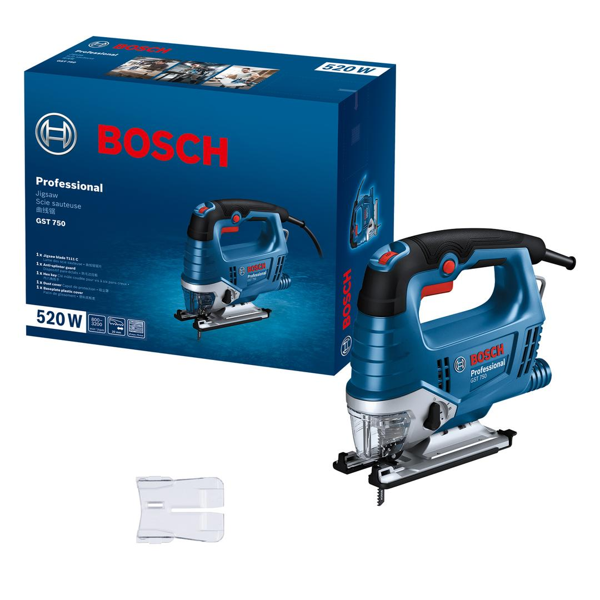
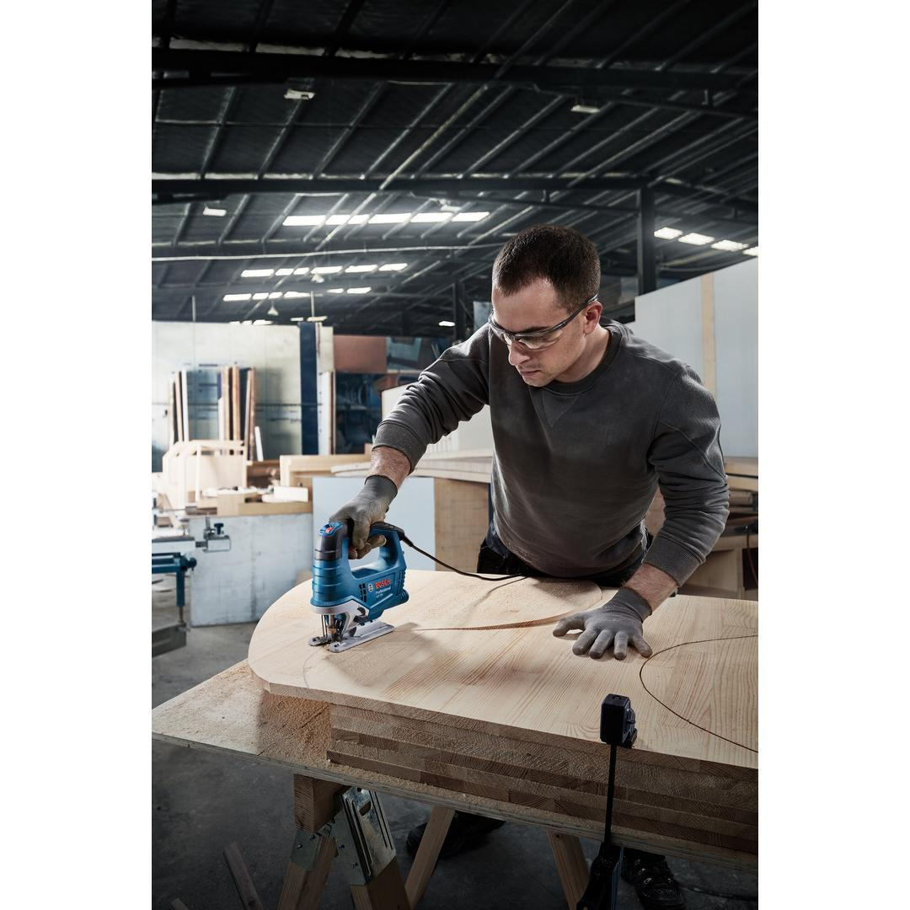
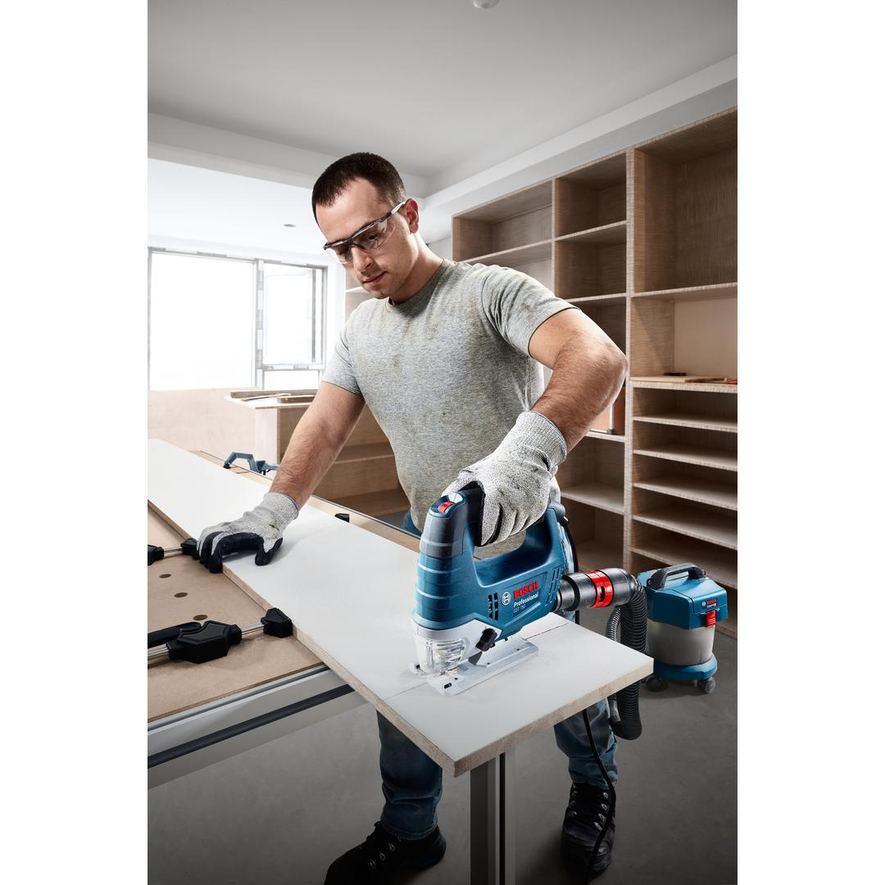
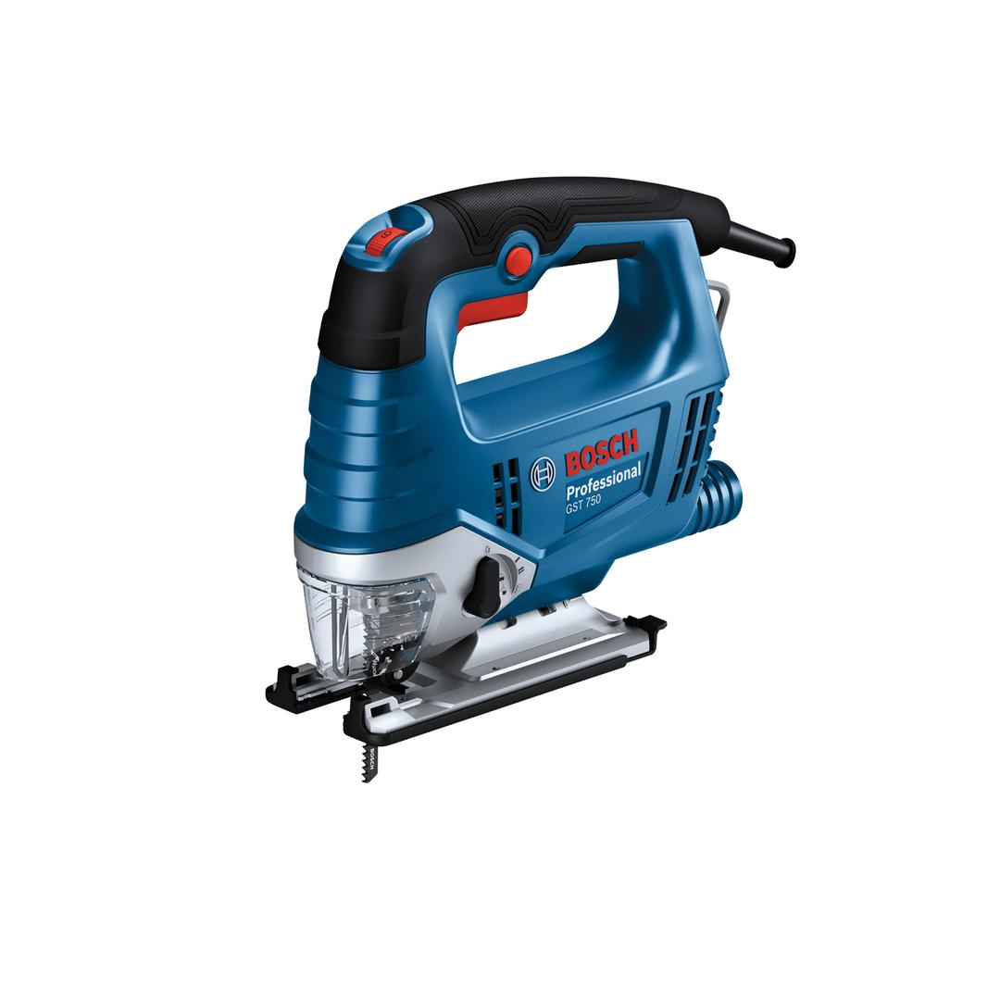

06015B41K0




The GST 750 Professional jigsaw allows to cut through multiple materials and work long, fatigue-free hours for excellent results. A faster cutting experience is effortlessly achieved with its powerful 520 W motor. With the help of 4-stage orbital actions, it delivers amazing work with more speed and precision. The work process is also more efficient thanks to the SDS blade holder that ensures fast blade change. While the pre-selection speed wheel allows to cut through various materials effortlessly with optimized, adjustable performance, its ergonomic handle design with soft rubber parts offers superior holding experience, making it easier to cut for longer hours with less effort.
| Voltage, electrical |
230 V |
| Rated input power |
520 W |
| Saw, stroke length |
20 mm |
| Cutting depth in wood |
75 mm |
| Stroke rate at no load |
800 – 3,200 spm |
| Weight |
2.290 kg |
| No-load speed |
3,200 rpm |
| Tool dimensions (width) |
75 mm |
| Tool dimensions (length) |
264 mm |
| Tool dimensions (height) |
211 mm |
| Cutting depth in aluminium |
15 mm |
| Bevel angle |
-45 – 45 ° |
| Tool holder |
T-Shank |
The reliable jigsaw for your daily use
This corded jigsaw easily cuts wood, metal, and other materials. It can cut curves and rounds just as easily as straight lines. It is ideal for precise cutting of shapes for cabinet installers,carpenters, framers, roofers, and property and plant managers.